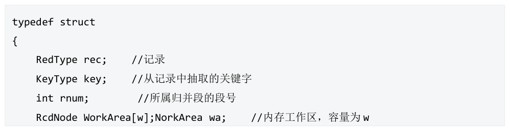

第 61 题
现有五个归并段，每个归并段（0-4 编号）的所有记录关键字如下：{10，15，16}、{9，18， 20}、{20，22，40}、{6，15，25}、{12，37，48}。若采用败者树实现5 路归并，在进行第二轮比较后 （得到第二个冠军节点），根节点的值为（）
- A．1
- B．0
- C．9
- D．10
答案与解析
答案：B
构建的败者树如左图所示，第二轮比较后，如右图所示，可知根节点是归并段0 的编号。
第 62 题
设由置换-选择排序法得到9 个初始归并段，其长度（记录个数）依次为(9,30,12,18,3,17,2,6,24)。假设每条记录的大小是一个磁盘块，则由其构成的3 路最佳归并树的I/O 次数为（ ）
- A．440
- B．442
- C．444
- D．446
答案与解析
答案：D
首先要判断是否要补充虚段，计算t=(n-1)%(k-1)是否为0，本题中，t=(n-1)%(k- 1)=(9-1)%(3-2)=0，不需要补充；若不为0，需要补充的虚段数为n-1-n=t。最佳归并树如下。每个结点再归并排序中需要读出和写入磁盘各一次，所以I/O次数为WPL*2 。经计算I/0次数 =2*(2*3+3*3+6*3+9*2+12*2+17*2+18*2+24*2+30*1)=446。
第 63 题
对于输入数据流(15,19,04,83,12,27,11,25,16,34,26,07,10,90,06)，在使用置换-选择排序算法进行外部排序时，设工作区大小为4，那么在置换-选择排序过程中，生成的初始归并段的数量是（ ）。
- A．2
- B．3
- C．4
- D．5
答案与解析
答案：B
得到了3个初始归并段：(04,12, 15,19, 25, 27, 34,83)，(07,10,11,16,26, 90)和 (06)。
第 64 题
下面数据结构是选择置换排序内存工作区的存储结构定义：使用败者树来选出每一轮的MINIMAX 记录。相比于普通的败者树，选择置换排序中的败者树在叶子节点，除了记录的关键字（索引）外，还引入了段号，规则为：败者树的建立时，所有叶子节点初始关键字值为0 段号为0依次从后往前将待排序序列记录的关键字输入到叶子结点，段号置为1。至编号最小的叶子结点被填充完，第一个冠军节点（MINIMAX 记录的编号）被选出。后续冠军节点所在叶子结点补充新的记录的关键字后，若小于上一轮的MINIMAX，段号+1。否则仍为当前轮次的段号。比较的规则如下：先比较段号，段号小者直接获胜。段号相等，记录的关键字值小的获胜。根据上述规则，对{51，49，39，46，38，29，14，61，15，30，1，48}进行选择置换排序，工作区WA 的大小w=6，得到第一个初始归并段后（即新的冠军结点内的编号所在叶子结点的段号是2 的时候），败者树的根节点编号为（）

- A．0
- B．1
- C．3
- D．4
答案与解析
答案：A
此题答案选A。初始化过程，以及第一个归并段形成过程如下图所示： （图j 是输出6 个记录后选得MINIMAX 记录为wa[1]的败者树，图k 为得到第一个初始归并段后的状态。）
第 65 题
在使用置换-选择排序算法进行外部排序时，以下哪个选项描述了算法如何处理候选区和输入数据流的关系?（ ）
- A．从候选区中选择最大记录，并在输入数据流中找到一个比其大的记录进行替换
- B．从候选区中选择最小记录，并在输入数据流中找到一个比其小的记录进行替换
- C．从输入数据流中选择最小记录，并与候选区中的最大记录进行交换
- D．将输入数据流中当前读取的记录插入到候选区中适当的位置，然后选择候选区中的最小记录输出
答案与解析
答案：D
置换-选择排序算法主要用于外部排序，当内存空间有限时，需要将大量数据分段进行排序。在算法中首先将输入数据流的前k 个记录读入内存作为候选区。然后，执行以下操作。 （1）从候选区中选择最小记录 （2）将最小记录输出到当前归并段 （3）从输入数据流中读取下一个记录，如果该记录大于或等于已输出的最后一个记录，将其插入到候选区中适当的位置。否则，将该记录存入适当的归并段。重复步骤(1)~(3)，直到输入数据流中的所有记录都被处理完毕。因此，选项D 正确描述了置换-选择排序算法如何处理候选区和输入数据流的关系。
第 66 题
用败者树筛选MINIMAX 记录的选择置换排序算法中，若内存工作区WA 大小为m 个记录，共有n 个记录，生成所有的初始归并段所需的时间复杂度为（ ）
- A．𝑂𝑛
- B．𝑂𝑚𝑛
- C．𝑂𝑚𝑙𝑜𝑔2𝑛
- D．𝑂𝑛𝑙𝑜𝑔2𝑚
答案与解析
答案：D
败者树每次选择一个MINIMAX 记录的时间复杂度是𝑂𝑙𝑜𝑔2𝑚，一共要选择n-1 轮，所以整体的时间复杂度是𝑂𝑛𝑙𝑜𝑔2𝑚。本题细节应结合上一题理解。
第 67 题
下列关于选择- 置换排序的说法正确的是（ ）。
Ⅰ．创建初始段文件过程中，需要不断地在内存工作区中选择不小于旧的MINMAX 的最小值，此过程需利用败者树实现
Ⅱ．利用败者树不断选择新的MINMAX 记录时，为防止新加入的关键字值更小，每个叶结点都附加一个段号，当进行关键字比较时，先比较段号，段号大的为胜者；段号相同的关键字值小的为胜者
Ⅲ．置换选择排序算法得到的初始归并段的长度并不受内存容量的限制，且获得的归并段的平均长度为内存工作区大小的两倍
- A．Ⅰ,Ⅲ
- B．Ⅱ,Ⅲ
- C．Ⅰ,Ⅱ,Ⅲ
- D．Ⅰ,Ⅱ
答案与解析
答案：A
选择置换排序工作流程如下：
①从输入文件FI 输出w 个记录到工作区WA。
②从WA 中选出其中关键字取最小值的记录，记为MINIMAX 记录。
③将MINIMAX 记录输入到输出文件FO。（FI 和FO 一般是外部文件物理块—缓冲区—内存工作区WA 交互）
④若FI 不空，则从H 输出下一个记录到WA。
⑤从WA 中所有关键字比MINIMAX 记录的关键字大的记录中选出最小关键字记录，作为新的MINIMAX 记录。
⑥重复➂~⑤，直至WA 中选不出新的MINIMAX 记录为止，由此得到一个初始归并段，输入一个归并段的结束标志到FO。
⑦重复②~⑥，直至WA 为空。由此得到所有初始归并段。所以，Ⅰ、Ⅲ都是选择-置换算法选择下一个符合条件的MINMAX 的具体流程。Ⅱ错误，当进行关键字比较时，先比较序号，应该选择段号小的为胜者，因为段号大的是后来新加入的一批的元素，新一批添加的元素的比当前MINMAX 更小的数值（段号更大）是不应该被选取的。
第 68 题
外部排序的开销主要是I/O 操作，可以采取一些措施来减小I/O 时间，下列说法正确的是（ ）
- A．使用置换-选择排序主要是为了通过减小初始归并段的长度来减少元素之间比较次数的
- B．使用败者树可以对置换-选择排序做优化来减小元素之间的比较次数
- C．败者树主要是为了增大归并路数，只要这棵败者树的路数越多，排序时间就越短
- D．构建的最佳归并树和哈夫曼树一样，只有度为0 和2 的结点
答案与解析
答案：B
置换-选择排序的目的是减小归并段的数量，增大归并段的长度，A错；置换选择排序时可以使用改进的败者树来减小元素之间的比较次数，具体机制是：增开一个字段用来记录当前元素的段号，另外设置一个全局变量记录MINMAX，元素值小于MINMAX的就记为另一个段号，B对；多路归并时，路数增大，I/O时间减少，但是并不是越大越好，过大反而会降低效率，c错；最佳归并树是K叉哈夫曼树，只有度为0和k的结点，D错。
第 69 题
设外存上有80 个归并段，进行8 路平衡归并，为实现最佳归并，需要补充的虚段个数是（ ）
- A．4
- B．5
- C．6
- D．不需要补充
答案与解析
答案：B
因为每次都是8 个归并段合并，所以归并树是度为m 的正则树，只有度为m和叶子结点，由公式：度数之和+1=结点总数可以得到，𝑚𝑛𝑚+ 1 =𝑛𝑚+ 𝑛0→𝑚−1𝑛𝑚= 𝑛0 − 1 →𝑛𝑚=𝑛−1/𝑚−1，但我们要注意到，当𝑛−1%𝑚−1= 0，不需要补充虚结点；当𝑛− 1%𝑚−1≠0，我们要补充虚结点，补充的虚结点个数为𝑚−1−𝑛−1%𝑚−1。补充的目的其实就是使𝑛𝑚是个整数，即补充后的段数是(m-1)的倍数。将n=80，m=8 代入，补充的虚段数是8 − 1−80 −1%8 −1= 5。
第 70 题
在对大量数据进行外部排序时，以下策略不能有效降低磁盘I/O 操作次数的是（ ）
- A．选择置换排序
- B．败者树
- C．最佳归并树
- D．适当增大归并路数
答案与解析
答案：B
I/O 次数为形成初始归并段的内部排序和归并排序的磁盘I/O 次数和归并排序的I/O 次数之和。归并排序趟数S=log_k，其中k 为归并路数，r 为初始归并段数，归并排序的I/O次数=S*（记录总数/单个磁盘块所能容纳记录数）*2（*2 是因为读入和写出各一次）所以要减少I/O次数就要减少S，由𝑆= 𝑙𝑜𝑔𝑘𝑟，减少S 可以增大k 或者减少r。 A 选项选择置换排序是减少初始归并段数r，但此时每个初始归并段大小不一样，所以需要C 选项最佳归并树得到最小的wpl（I/O 次数）。 D 选项是增大k，同样可以减小S，但由于内存缓冲区资源有限k，k 路归并需要至少k 个缓冲区，所以k 不可无限增大。 B 选项，败者树是为了减少归并排序每次选取k 个缓冲区中的最小的记录的比较次数，使得每次从k 个缓冲区的首元素选出最小的数，比较次数k-1 降为𝑙𝑜𝑔2𝑘，与I/O 次数无关，故此题选B。 【答案速对】 CCDDADBBCBDBBDBDDCCBBABBDDAABBDCDCB